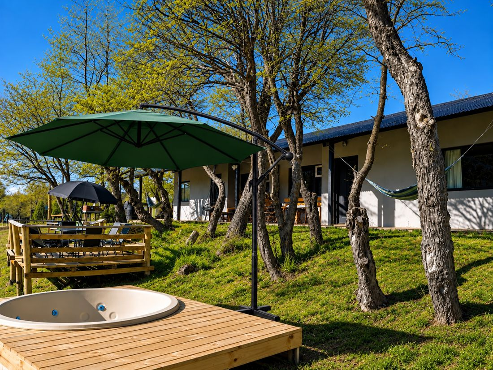
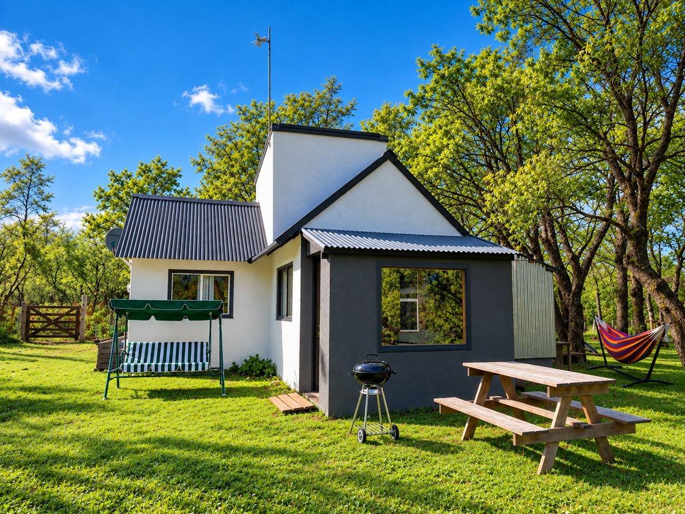

Tierras Mágicas es un refugio de montaña entre Villa Pehuenia y Moquehue, rodeado de bosque y con vista al lago. Acá la idea es bajar un cambio: descansar, compartir y disfrutar la montaña a otro ritmo.
En esta guía tenés todo lo que necesitás para tu estadía. Si algo no está, escribinos: estamos para ayudarte.

Incluido en tu estadía
Tina caliente (jacuzzi) y sauna
Kayaks, tablas de stand up, airtrack e isla flotante
Calefacción a pellets (pellets incluidos)
Internet satelital Starlink y Smart TV con DirecTV
Ropa de cama, toallas y amenities de baño
Básicos de cocina: café, té, azúcar, sal, aceite y vinagre
La leña para el fogón y la parrilla no está incluida. La podés pedir por WhatsApp.
Bienvenidos a Tierras Mágicas. Bienvenidos a la montaña.
Tierras Mágicas2
Llegada
Check-in desde las 15:00
Siempre avisanos tu horario estimado de llegada, así nuestro recepcionista te espera.
Estamos en el paraje El Verde, en Moquehue (Neuquén, Patagonia argentina), sobre la Ruta Provincial 11, entre Villa Pehuenia y Moquehue. Tenemos vista al lago y estamos a 100 metros de él (no sobre la costa).
Dirección: Ruta Provincial 11, paraje El Verde, Moquehue (CP 8345)
Tomá la RP 11 en dirección a Moquehue y seguí el link de Google Maps hasta la entrada de Tierras Mágicas. Te conviene abrirlo antes de salir, mientras tenés señal.
Si te perdés o no tenés señal, buscá un punto con señal y escribinos por WhatsApp.
Tierras Mágicas5
Tu cabaña

Wi-Fi (Starlink)
Red: TM-Guest
Contraseña: {{WIFI_CLAVE}}
Es internet satelital: anda bien para mensajes, navegar y streaming. Con tormentas o nieve fuerte puede cortarse un rato.
Calefacción
Las estufas son a pellets, digitales y se controlan por Wi-Fi. Los pellets están incluidos: si ves que se están por terminar, avisanos.
No tapes la salida de aire ni pongas ropa encima.
Si suena el detector de monóxido de carbono: abrí las ventanas, salí de la cabaña y llamanos.
TV y cocina
Hay Smart TV de 32" con DirecTV y streaming (iniciá sesión con tus cuentas y cerrala al irte). La cocina tiene anafe a gas, microondas, heladera y utensilios.
Tierras Mágicas6
Tina y sauna
Están incluidas en la tarifa. Cuando hay mucha demanda se usan por turnos, que se piden por WhatsApp.
Avisanos con anticipación: la tina tarda unas 5 horas en calentarse y el sauna unas 3.
Horarios
Tina caliente: de 10:00 a 23:00, turnos de 2 horas.
Sauna: de 10:00 a 22:00, turnos de 1 hora.
Para disfrutarlas seguros
Duchate antes de entrar.
No lleves envases de vidrio.
Evitá usarlas después de tomar alcohol y no te quedes más tiempo del recomendado.
Descanso. Respetá el silencio a partir de las 00:00. Somos varias cabañas: cuidemos la tranquilidad de todos.
No se fuma dentro de la cabaña.
Mascotas. Se aceptan mascotas de tamaño mediano, con aviso al reservar. No pueden quedar solas en la cabaña.
Visitas. Las instalaciones son solo para los huéspedes. Para recibir a alguien, consultanos antes.
Fuego. Usá solo el fogón y las parrillas habilitados. En temporada de incendios respetá las prohibiciones vigentes. Nunca dejes un fuego sin apagar.
Cuidado del alojamiento. Cuidá los muebles, el equipamiento y los textiles, y no los saques de la cabaña.
Espacios compartidos. Cuando hay mucha demanda, la tina, el sauna y los equipos acuáticos se usan por turnos.
Residuos y circulación. Separá la basura en los recipientes indicados y manejá despacio dentro del predio.
Al irte. Devolvé las llaves y revisá que no te olvides nada.
Tierras Mágicas9
Preguntas frecuentes
¿Cómo uso la tina y el sauna?
Están incluidos en la tarifa. Avisanos con anticipación porque necesitan horas para calentarse. Si hay mucha demanda, se usan por turnos (ver página 7).
¿Hay estacionamiento?
Sí, dentro del predio. Estacioná en el lugar que corresponde a tu cabaña.
¿Puedo usar el fogón y la parrilla?
Sí. La leña no está incluida: pedila por WhatsApp. Al terminar, asegurate de que el fuego quede apagado.
Somos más personas, ¿hay lugar?
Hasta 4 personas más pueden dormir en el dormi, una cabaña separada que usa el baño de la cabaña alquilada. Depende de la disponibilidad y tiene costo por persona.
¿Estamos sobre el lago?
Tenemos vista al lago y está a 100 metros, pero no estamos sobre la costa.
Necesito ayuda, ¿qué hago?
Escribinos por WhatsApp en cualquier momento. Para emergencias, mirá la página 16.
Tierras Mágicas10
Dónde comprar
En temporada baja muchos comercios reducen su horario: consultá antes de ir.